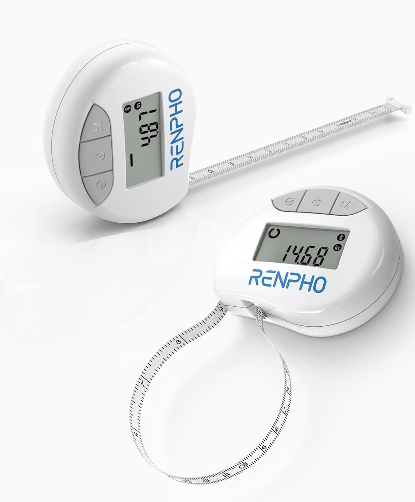

📐 Measurement
-- mm
-- cm
📡 Open-source BLE interoperability research
Connect to a Bluetooth smart measuring tape, inspect its GATT notifications, and export the original packets for protocol research. First tested with the RF-BMF01 device advertised as ES-Tape.
🐙 View source on GitHub
ES-Tape).
📐 Measurement
-- mm
-- cm
🧭 State / unit
Waiting for a packet
--🔗 Connection
Not connected
No device selected
Preparing IndexedDB...
Packets in this session: 0
Each notification is stored before interpretation with its bytes, HEX, Base64, ASCII, timestamp, timing, and parser result. Exports may contain browser and device metadata; review them before sharing.
One row per confirmation burst from the tape's physical button.
Live